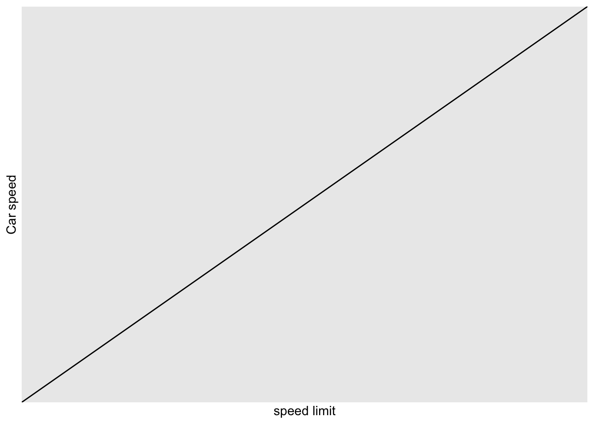
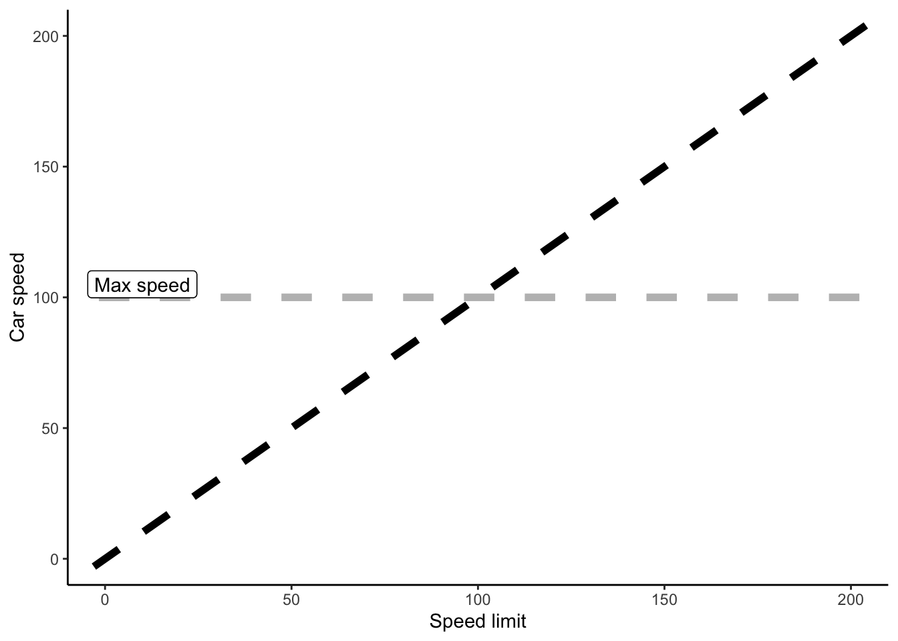
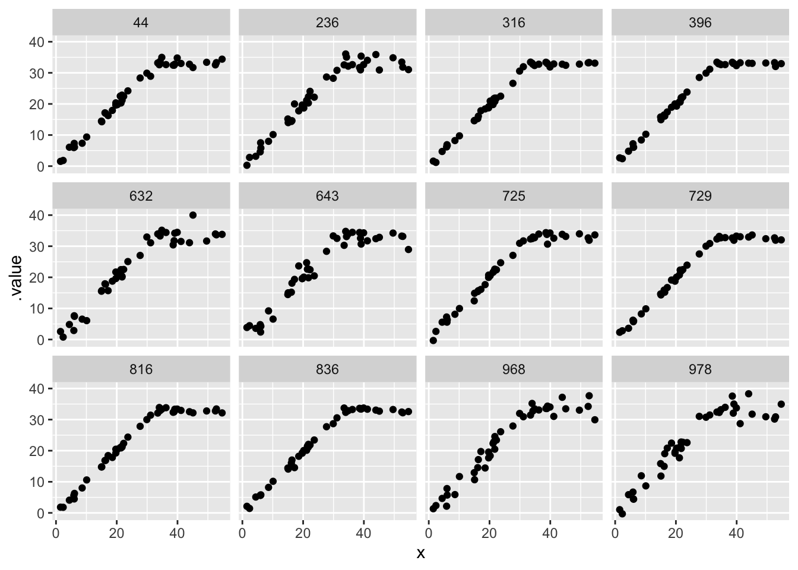
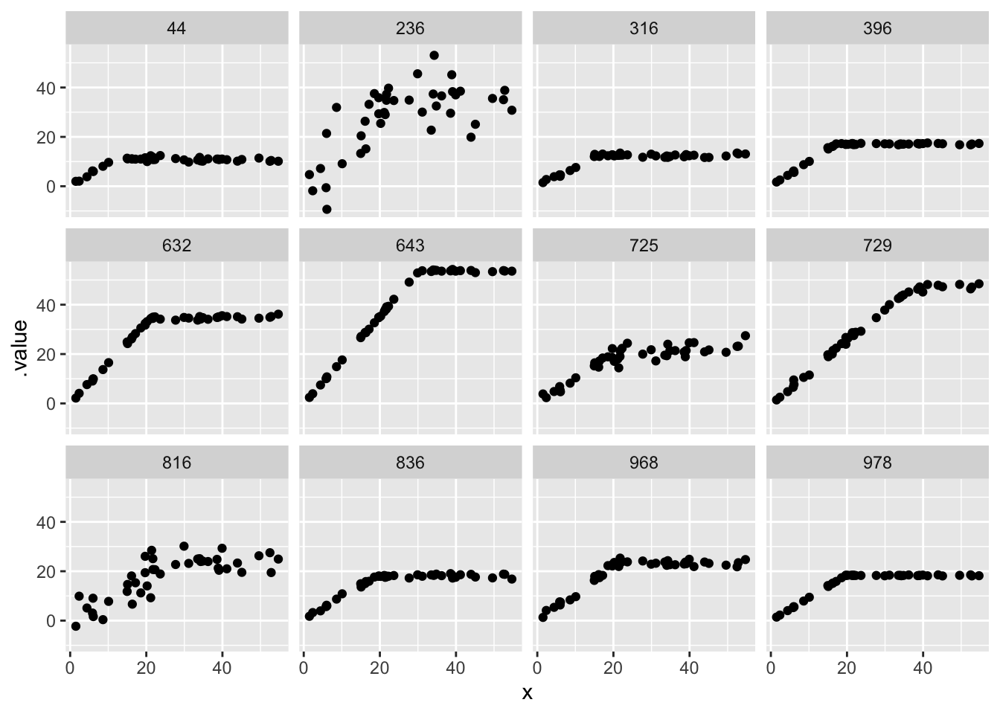

library(ggplot2)
library(tidyverse)
library(tidybayes)
library(cmdstanr)Two (or more) relationships
In breakpoint regression, we think that the relationship between two things can be described by two lines which alternate at a specific point.
When might this happen? One case is when a rate is determined by the minimum value of two functions1. For an example, consider cars driving down a series of roads. The roads vary in their speed limit, and each car is driven by very lawful drivers who always drive precisely the speed limit
tibble(x = 0:1, y = 0:1) |>
ggplot(aes(x = x, y = y)) +
geom_abline(slope = 1, intercept = 0) +
labs(x = "speed limit", y = "Car speed")
However, some of these highways have VERY high speed limits. The cars, however, can’t keep up: eventually they hit their max speed. When that happens, the lawful drivers hold steady at the fastest speed their car can maintain. Together, you get a kind of “hockey stick” shape:
tribble(~ limit, ~ max,
0, 0,
200, 200) |>
ggplot(aes(x = limit, y = max)) +
geom_point(col = "white") +
geom_abline(slope = 0, intercept = 100, lty = 2, lwd = 2, col = "grey") +
geom_label(aes(x = 10, y = 105, label = "Max speed")) +
geom_abline(slope = 1, intercept = 0, lty = 2, lwd = 2) +
theme_classic() +
labs(x = "Speed limit", y = "Car speed")
Not so fast!
Not every car is going to go at the exact manufacturers maximum speed! When (in my imaginary example) manufacturers release a new kind of car, they test a sample of cars to measure their maximum speed. Therefore we know the max speed (with some error) for that brand of car. However, the realized max speed for any specific car in the wild will be lower than this value. This could be caused by a host of unmeasured factors, such as that particular car’s defects, the kind of care it has received, etc
tribble(~ limit, ~ max,
0, 0,
200, 200) |>
ggplot(aes(x = limit, y = max)) +
geom_point(col = "white") +
geom_abline(slope = 0, intercept = 100, lty = 2, lwd = 2, col = "grey") +
geom_label(aes(x = 25, y = 105, label = "Factory Max speed")) +
geom_abline(slope = 0, intercept = 80, lty = 2, lwd = 1, col = "orange") +
geom_label(aes(x = 25, y = 85, label = "Actual max speed")) +
geom_abline(slope = 1, intercept = 0, lty = 2, lwd = 2) +
theme_classic() +
labs(x = "Speed limit", y = "Car speed")
Write that in mathematics
for one car, driving on different roads.
- We label the different roads \(i\)
- \(\tau\) is the maximum speed of this particular kind of car
- \(M\) is a bunch of measurements of the car’s max speed (based on factory cars)
- \(p\) is the proportion of that maximum that our actual car has
\[ \begin{align} Y_i &\sim \text{Normal}(\mu_i, \sigma)\\ M &\sim \text{Normal}(\tau, \sigma_m)\\ \mu_i & = \begin{cases} X_i & \text{if } X_i \leq p\tau \\ p\tau & \text{if } X_i > p\tau \end{cases} \\ \text{logit}(p) &\sim \text{Normal}(2, .5) \\ \tau &\sim \text{Normal}(...) \\ \sigma_m &\sim \text{Exponential}(...) \\ \sigma &\sim \text{Exponential}(...) \end{align} \]
Simple Stan code with prior predictions
breakpoint_B <- cmdstan_model(here::here("posts/2023-07-05-breakpoint/breakpoint_B.stan"))
breakpoint_Bdata {
int n;
vector[n] x;
real B;
}
// transformed data {
// real M = max(x);
// }
parameters {
real b2;
real<lower=0> sigma;
}
model {
b2 ~ normal(1, 1);
sigma ~ exponential(1);
}
generated quantities {
vector[n] y;
for( i in 1:n){
if (x[i] < B) {
y[i] = normal_rng(x[i]*b2, sigma);
} else {
y[i] = normal_rng(B*b2, sigma);
}
}
}xvar <- runif(42, min = 1, max=55)
breakpoint_B_prior <- breakpoint_B$sample(chains=1,
data = list(x = xvar,
n = 42,
B = 25))Running MCMC with 1 chain...
Chain 1 Iteration: 1 / 2000 [ 0%] (Warmup)
Chain 1 Iteration: 100 / 2000 [ 5%] (Warmup)
Chain 1 Iteration: 200 / 2000 [ 10%] (Warmup)
Chain 1 Iteration: 300 / 2000 [ 15%] (Warmup)
Chain 1 Iteration: 400 / 2000 [ 20%] (Warmup)
Chain 1 Iteration: 500 / 2000 [ 25%] (Warmup)
Chain 1 Iteration: 600 / 2000 [ 30%] (Warmup)
Chain 1 Iteration: 700 / 2000 [ 35%] (Warmup)
Chain 1 Iteration: 800 / 2000 [ 40%] (Warmup)
Chain 1 Iteration: 900 / 2000 [ 45%] (Warmup)
Chain 1 Iteration: 1000 / 2000 [ 50%] (Warmup)
Chain 1 Iteration: 1001 / 2000 [ 50%] (Sampling)
Chain 1 Iteration: 1100 / 2000 [ 55%] (Sampling)
Chain 1 Iteration: 1200 / 2000 [ 60%] (Sampling)
Chain 1 Iteration: 1300 / 2000 [ 65%] (Sampling)
Chain 1 Iteration: 1400 / 2000 [ 70%] (Sampling)
Chain 1 Iteration: 1500 / 2000 [ 75%] (Sampling)
Chain 1 Iteration: 1600 / 2000 [ 80%] (Sampling)
Chain 1 Iteration: 1700 / 2000 [ 85%] (Sampling)
Chain 1 Iteration: 1800 / 2000 [ 90%] (Sampling)
Chain 1 Iteration: 1900 / 2000 [ 95%] (Sampling)
Chain 1 Iteration: 2000 / 2000 [100%] (Sampling)
Chain 1 finished in 0.1 seconds.breakpoint_B_prior variable mean median sd mad q5 q95 rhat ess_bulk ess_tail
lp__ -2.22 -1.84 1.17 0.85 -4.79 -1.07 1.00 343 477
b2 1.00 1.01 1.06 1.02 -0.72 2.78 1.00 504 446
sigma 1.04 0.71 1.09 0.80 0.04 3.15 1.00 464 350
y[1] 10.05 10.31 10.76 10.35 -7.35 27.93 1.00 515 483
y[2] 12.06 12.27 12.94 12.44 -9.36 33.46 1.00 500 510
y[3] 25.03 25.37 26.59 25.91 -17.43 69.54 1.00 505 447
y[4] 24.96 25.52 26.54 25.56 -18.15 69.41 1.00 505 444
y[5] 25.02 24.87 26.62 25.81 -18.28 69.16 1.00 506 456
y[6] 24.97 25.14 26.68 25.96 -18.58 69.22 1.00 501 455
y[7] 25.04 25.53 26.53 25.60 -18.65 68.77 1.00 506 444
# showing 10 of 45 rows (change via 'max_rows' argument or 'cmdstanr_max_rows' option)plot it
prior_draws <- breakpoint_B_prior |>
tidybayes::gather_draws(y[i], ndraws = 12) |>
mutate(x = xvar[i])
prior_draws |>
ggplot(aes(x = x, y = .value)) + geom_point() +
facet_wrap(~.draw)
extending it
I want to play with reparameterizing the model using a proportion. This represents the location of the breakpoint: somewhere between 0 and the maximum of the x axis.
breakpoint <- cmdstanr::cmdstan_model(
here::here("posts/2023-07-05-breakpoint/breakpoint.stan"))
set.seed(4812)
xvar <- runif(42, min = 1, max=55)
breakpoint_prior <- breakpoint$sample(chains=1,
data = list(x = xvar,
n = 42))Running MCMC with 1 chain...
Chain 1 Iteration: 1 / 2000 [ 0%] (Warmup)
Chain 1 Iteration: 100 / 2000 [ 5%] (Warmup)
Chain 1 Iteration: 200 / 2000 [ 10%] (Warmup)
Chain 1 Iteration: 300 / 2000 [ 15%] (Warmup)
Chain 1 Iteration: 400 / 2000 [ 20%] (Warmup)
Chain 1 Iteration: 500 / 2000 [ 25%] (Warmup)
Chain 1 Iteration: 600 / 2000 [ 30%] (Warmup)
Chain 1 Iteration: 700 / 2000 [ 35%] (Warmup)
Chain 1 Iteration: 800 / 2000 [ 40%] (Warmup)
Chain 1 Iteration: 900 / 2000 [ 45%] (Warmup)
Chain 1 Iteration: 1000 / 2000 [ 50%] (Warmup)
Chain 1 Iteration: 1001 / 2000 [ 50%] (Sampling)
Chain 1 Iteration: 1100 / 2000 [ 55%] (Sampling)
Chain 1 Iteration: 1200 / 2000 [ 60%] (Sampling)
Chain 1 Iteration: 1300 / 2000 [ 65%] (Sampling)
Chain 1 Iteration: 1400 / 2000 [ 70%] (Sampling)
Chain 1 Iteration: 1500 / 2000 [ 75%] (Sampling)
Chain 1 Iteration: 1600 / 2000 [ 80%] (Sampling)
Chain 1 Iteration: 1700 / 2000 [ 85%] (Sampling)
Chain 1 Iteration: 1800 / 2000 [ 90%] (Sampling)
Chain 1 Iteration: 1900 / 2000 [ 95%] (Sampling)
Chain 1 Iteration: 2000 / 2000 [100%] (Sampling)
Chain 1 finished in 0.1 seconds.prior_draws <- breakpoint_prior |>
tidybayes::gather_draws(y[i], ndraws = 12) |>
mutate(x = xvar[i])
prior_draws |>
ggplot(aes(x = x, y = .value)) + geom_point() +
facet_wrap(~.draw)
generating quantities from a mixture:
first use beta ccdf to decide if it is below or above the breakpoint using a random number then pick from one or the other of the two normal distributions
Footnotes
see Leibig’s Law of the Minimum, and also Dune↩︎